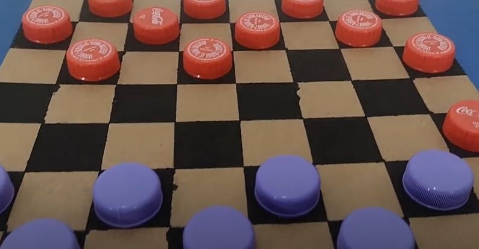

Como Reciclar Plástico Corretamente
Publicado em 20 de Agosto de 2025
O plástico surgiu como um material simples de ser produzido, barato e em grandes quantidades. Isso, no entanto, tem um preço, uma vez que o plástico não se decompõe naturalmente como outros materiais como a madeira. Um simples pedaço de sacola, por exemplo, pode permanecer na natureza por mais de 400 anos. Isso resulta em um ecossistema alterado, na qual prejudicam não só a vida animal, mas humana também.
Embora o plástico seja o problema, ainda existem formas e locais adequados para o descarte e reutilização desse material. Para isso, foi criado convenções para a identificação de tipos de plásticos que podem ser reciclados.
A reciclagem pode ser feita desde a entrega em pontos de coleta, como também na fabricação caseira de utensílios que podem ajudar no dia-a-dia. Por exemplo, as tampas de uma garrafa pet podem virar peças de um jogo de xadrez ou damas:
Por outro lado, antes de ser feito a reciclagem, alguns passos devem ser seguidos antes:
1) Separe por tipo de resíduo
2) Limpe e seque
Enxágue rapidamente para tirar restos de comida ou bebida. Alem disso, não precisa gastar muita água: use apenas o que sobrou da louça. Deixe escorrer para não molhar o restante do reciclável.
4) O que não vai para reciclagem
- Materiais muito sujos ou engordurados (ex.: isopor de carnes, filme plástico com gordura).
- Plásticos mistos difíceis de separar (sachês metalizados, alguns laminados).
- Brinquedos quebrados com partes de metal/eletrônica (destine como eletrônico quando for o caso).
5) Destinação
Leve até um ponto de coleta seletiva ou deixe para a coleta do seu bairro, se houver. No Mapa de Reciclagem, você encontra pontos próximos e o que cada um aceita.
Note que a limpeza é essencial, umaz vez que a contaminacao de alguns materiais podem fazer mal ao ser humano quando expostas muito tempo sem uma limpeza adequada.